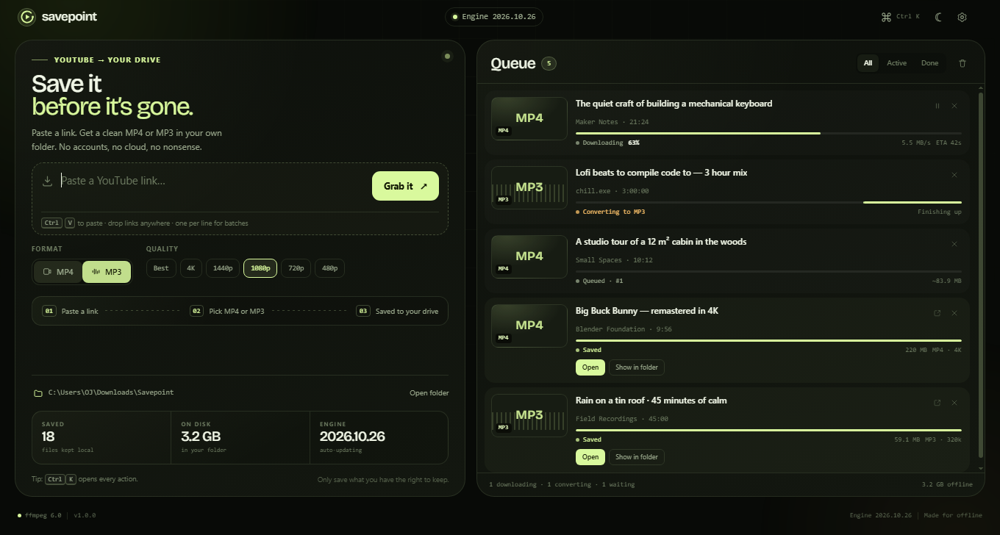
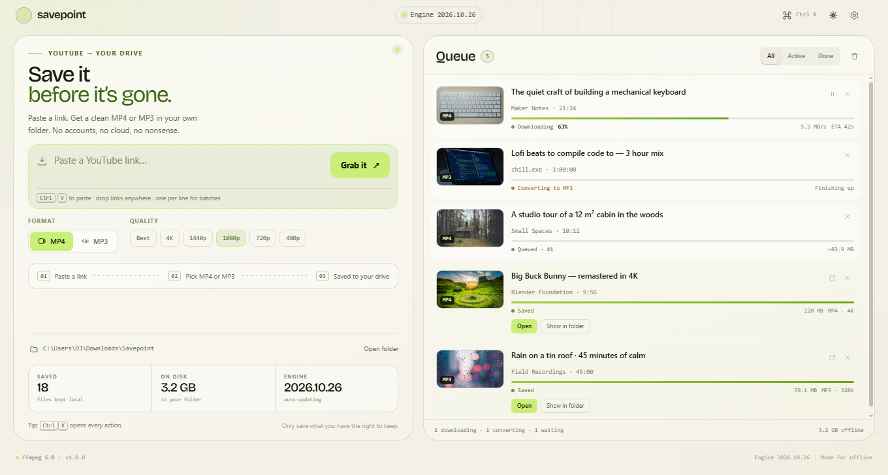

Video or audio, your call
Grab the full picture as MP4 up to 4K, or strip it to MP3 at 320, 256, 192, or 128 kbps. Quality is a click away, not a config file.
Windows 10 / 11 · 64-bit · free
A tiny desktop app that turns a YouTube link into a clean MP4 or MP3 in your own folder. No accounts. No cloud. No queue anxiety.


What it does
One window, one job: get the file onto your drive without turning your PC into a space heater.
Grab the full picture as MP4 up to 4K, or strip it to MP3 at 320, 256, 192, or 128 kbps. Quality is a click away, not a config file.
One link or twenty. Drop them on the window, paste a playlist, or let the queue chew through it while you do something else.
Pause, resume, retry, cancel. Live speed, ETA, and a clear reason whenever a video refuses to cooperate.
Ctrl + K opens every action. Ctrl + V grabs a link from the clipboard. Enter queues it.
A dark room theme and a daylight theme, both designed by hand. It follows Windows if you’d rather not think about it.
The downloader engine updates from GitHub when YouTube changes, and the app checks for new versions in the background. You confirm the download; it does the rest.
Three steps
Copy any YouTube video, Short, or playlist URL. Drop it on the window if you prefer.
MP4 with the resolution you want, or MP3 with the bitrate you want. Defaults are sensible.
Open it, move it, back it up. The file is yours and nothing was uploaded anywhere.
Built for hand-me-downs
No 500 MB framework in the renderer, no animated wallpaper, no background indexer. Savepoint is a plain HTML interface on Electron with a strict budget.
Budget
Runs on Windows 10 and 11, 64-bit. No admin rights needed after install.
Straight answers
Yes. The app is free and the source is on GitHub under the MIT license. There is no paid tier, no watermark, and no account.
Into Downloads\Savepoint by default. You can point it anywhere from the folder button or Settings. Files never leave your computer.
Savepoint checks GitHub Releases a few seconds after launch and every four hours. When there is a new version it asks before downloading, then installs on restart. The yt-dlp engine can update on its own when YouTube changes something.
Yes, turn on Playlists in Settings and paste a playlist link. Up to 100 videos are added to the queue at a time.
Open Settings → Downloads and choose the browser you are signed in with under “Use browser cookies”. Savepoint reads only the cookies needed to pass the check.
No. Savepoint is an independent tool and is not affiliated with or endorsed by YouTube. Download only media you own or have permission to save, and follow the platform’s terms and local copyright law.
Ready when you are
Windows 10/11 · 64-bit · auto-updating